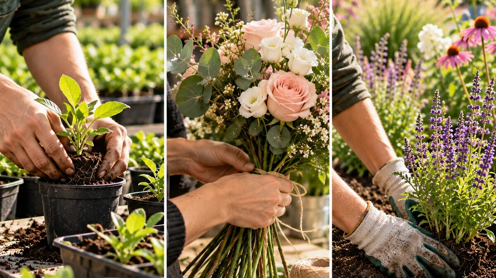
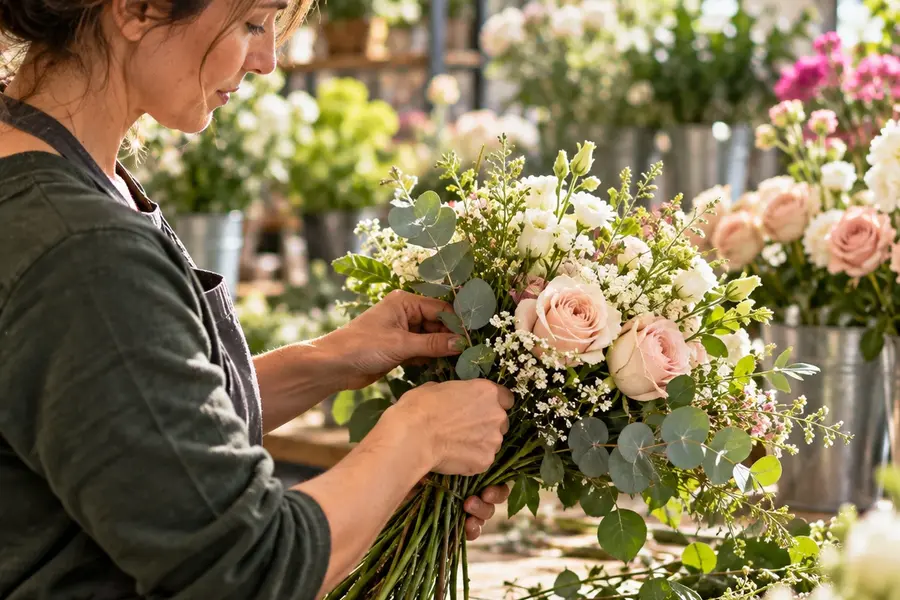

Métiers du végétal : des savoir-faire à découvrir, des vocations à faire grandir
Proposition d’article · date de publication à définir

Reconnaître une plante, composer un bouquet, aménager un jardin : derrière ces gestes se trouvent des connaissances, de la précision et de la créativité. À travers les concours qu’elle accompagne, VALHOR met en lumière les compétences des professionnels du végétal et de celles et ceux qui se forment à leurs métiers.
Un bouquet attire le regard. Un jardin donne envie de s’arrêter. Une plante trouve sa place sur un balcon. Le résultat est visible ; le travail qui l’a rendu possible l’est parfois moins.
Pour découvrir l’horticulture, la fleuristerie et le paysage, il faut aussi regarder les gestes : observer, choisir, assembler, planter. Les compétitions professionnelles offrent cette occasion. Elles rendent les savoir-faire concrets et permettent de découvrir des métiers dans toute leur exigence.
Connaître les végétaux : apprendre à regarder autrement
Avant de produire, de conseiller ou de planter, il faut connaître les végétaux. Savoir les identifier, distinguer leurs caractéristiques et comprendre leurs spécificités constitue une base essentielle pour les professionnels.
C’est cette connaissance que valorise le Concours national de reconnaissance des végétaux. VALHOR soutient les épreuves régionales et organise une finale nationale tous les deux ans. Le concours s’adresse aux apprenants de la production horticole, du paysage et du commerce des végétaux, ainsi qu’aux professionnels de ces domaines.
L’exercice met en lumière une compétence qui échappe souvent au grand public : derrière un nom de plante se trouve un apprentissage patient, fait d’observation et de pratique. Il valorise aussi le travail des établissements de formation qui accompagnent les futurs professionnels.
Créer et réaliser : la précision au service d’une idée
Les métiers du végétal mobilisent aussi la capacité à transformer une intention en réalisation. Une composition florale ou un aménagement paysager demande de faire des choix, de maîtriser des techniques et d’organiser son travail.

Les épreuves WorldSkills en donnent une illustration. VALHOR y accompagne les métiers de l’horticulture, de l’art floral et de jardinier-paysagiste. Les candidats doivent conjuguer connaissances, créativité et gestes précis dans un temps limité.
Pour les visiteurs, ces compétitions permettent de dépasser une image parfois réductrice des métiers manuels. Elles montrent le raisonnement derrière le geste, la préparation derrière la réalisation et l’entraînement derrière la maîtrise.
Rendre les compétences visibles pour ouvrir les horizons
Comment se projeter dans un métier dont on ne connaît que le résultat ? Montrer les étapes, expliquer les choix et donner à voir les professionnels au travail peut aider à mieux comprendre leur quotidien.
Un jeune en recherche d’orientation pourra s’intéresser à la dimension créative. Une personne en reconversion sera peut-être attirée par le travail avec le vivant. Une autre voudra découvrir les connaissances techniques nécessaires. Ces portes d’entrée sont différentes et méritent toutes d’être explorées.
Promouvoir les savoir-faire, faire connaître la diversité des métiers et attirer de nouveaux talents font partie des missions de VALHOR. Les concours constituent l’un des moyens de donner corps à cette ambition, en rapprochant découverte des professions, formation et transmission.
Et si la découverte commençait par un geste ?
Observer une épreuve, rencontrer un professionnel, échanger avec un établissement de formation : une première découverte permet de poser des questions concrètes. Qu’apprend-on ? Quels gestes faut-il maîtriser ? Quelle place occupent la création, la technique et le travail en équipe ?
Derrière chaque réalisation végétale, il y a des compétences à comprendre et des parcours à découvrir. Prendre le temps de les regarder, c’est déjà ouvrir de nouvelles possibilités.
Pour aller plus loin : découvrez les concours et initiatives de valorisation des métiers présentés sur le site de VALHOR.
Découvrir les initiatives de VALHORPartager : LinkedIn · Facebook · e-mail (boutons simulés, inactifs)